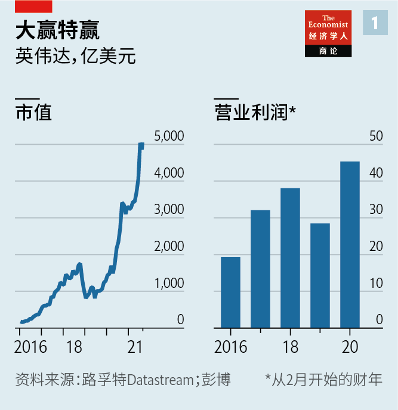
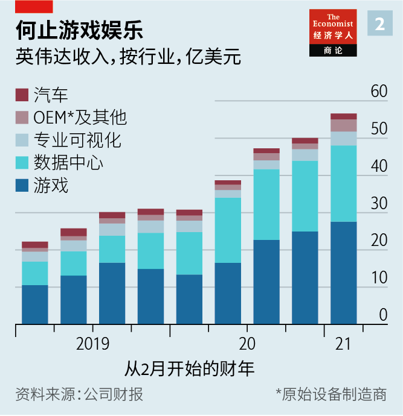
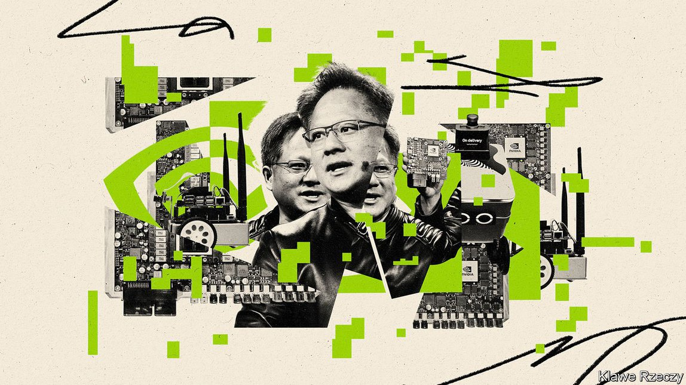
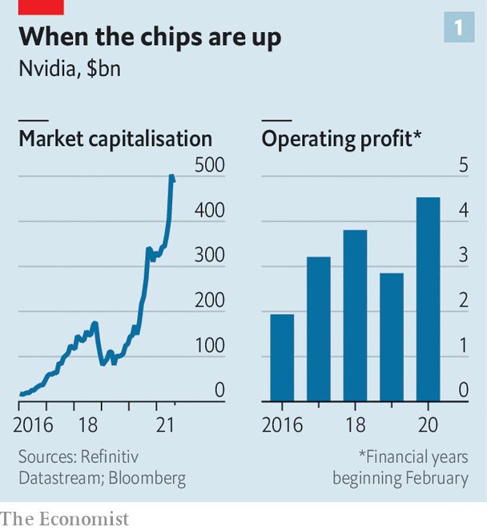
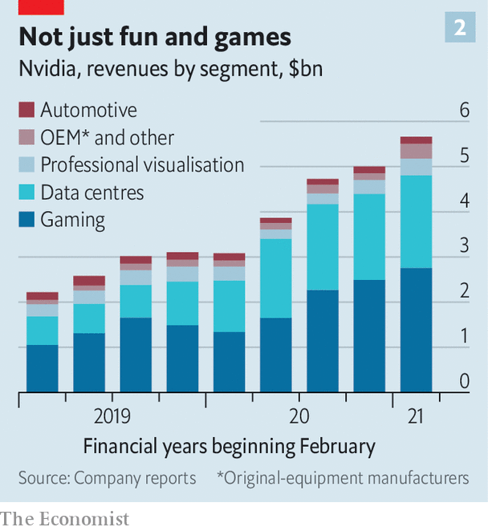

2021-08-22T15:21:17+00:00
我达，我见，我征服
英伟达在AI芯片上的豪赌会成功吗？
这家低调的芯片巨头很早便投身AI革命，现在依然领先于对手

“我们离倒闭永远只有30天。”这是英伟达联合创始人黄仁勋的口头禅。这话从英伟达老板嘴里说出来可能有点夸张，因为这家公司靠销售高性能的游戏和人工智能（AI）半导体，五年内市值从310亿美元增长到5050亿美元，令曾是全球最强大芯片制造商的英特尔黯然失色。不过这也仅仅是“有点”夸张。正如黄仁勋所说，英伟达正被“追逐同一个巨大机遇的巨头企业”包围。借用英特尔联合创始人安迪·格鲁夫（Andy Grove）的话来说，在这个飞速发展的市场，“只有偏执狂才能生存”。
保持时刻警醒让英伟达收获良多。2016年至2021年，它的收入增长了233%。营业利润在过去五年翻了一番多，达到45亿美元（见图表1）。今年3月至5月，销售额同比激增84%，毛利率达到64%。尽管英特尔的收入是英伟达的四倍，而且不但设计芯片还制造芯片，但投资者还是更看好只设计芯片的英伟达（它的市值是英特尔的两倍）。亚马逊、谷歌、微软以及中国的阿里巴巴的云计算数据中心都在使用英伟达的产品。它的客户还包括从药物研发到气候建模等各种领域里数不胜数的科研团队，以及所有的大型IT公司。它修建了一条又宽又深的“护城河”来保护自己的竞争优势。
如今，黄仁勋还想把这条护城河加宽、加深。去年9月，英伟达表示将斥资400亿美元收购安谋（Arm），大多数智能手机都使用这家英国公司设计的高性能且高能效的芯片。英伟达希望利用安谋的设计实力来设计供数据中心和AI使用的中央处理器（CPU），与英伟达在图形处理器（GPU）这一专用芯片上的既有优势形成互补。这笔交易必须得到美国、英国、中国和欧盟的监管机构一一批准。如果获批——鉴于两家公司在各自领域的市场支配力，这一点非常难说——英伟达在最热门的计算领域之一将取得看上去近乎不可撼动的地位。
黄仁勋幼年时随家人从台湾移民到美国，在1993年创办了英伟达。这家公司在头20年左右的时间里生产让电子游戏画面栩栩如生的GPU。不过在过去十年里，人们发现GPU在另一个前沿但更严肃的计算领域也表现突出：它们能大大加速向机器学习算法输入海量数据来训练它们执行任务的过程。四年前，对于英伟达在所谓的“加速计算”领域里的前景，黄仁勋直言不讳的自我评估震惊了华尔街。它可能“发展得极好”， 他说，“也可能很糟糕”。不管怎样，英伟达都“押上了全部身家”。
英伟达170亿美元的年收入仍有约一半来自游戏芯片（见图表2）。这些芯片还很擅长解决构成以太币这一流行的加密货币的基础的那些数学难题。这不时给GPU的销售注入了类似加密货币的波动性，在一定程度上造成了英伟达股价在2018年几乎腰斩。英伟达的另一块销售额来自向硬件制造商销售除图形和AI芯片以外的加速芯片。
但AI业务正在快速增长。其中包括程序员可以做出微调的专用芯片和软件——正是黄仁勋早先的押注让这一功能成为可能，当时一些投资者批评他是在烧钱和不务正业。2004年，他开始投资这种能够做微调的基础软件层“Cuda”，并将其植入所有的英伟达芯片中。
这些芯片系统很多最终都用到了服务器上，也就是让数据中心拥有超强处理能力的高性能计算机。英伟达对数据中心的销售额在总收入中的占比从2019年初的25%上升到目前的36%，几乎已与游戏GPU相当。随着各行各业的公司纷纷开始采用AI，在英伟达对数据中心的销售额中，对大型云服务供应商的销售占比从100%下降到50%。
如今，英伟达的AI软硬件一体化系统意图与机器学习算法无缝协作，比如谷歌维护的TensorFlow和Facebook的PyTorch等存储库中收集的算法。它开发了一些程序，将英伟达的软硬件与拥有自己AI项目的大企业客户的IT系统接通。一位前英伟达高管表示，这大大简化了AI开发人员的工作。英伟达还在向“推理”领域迈进：运行AI模型（迄今还是CPU的领地）而不仅仅是训练它们。英伟达加速计算业务主管伊恩·巴克（Ian Buck）表示，用于语音识别或内容推荐等的大型实时AI模型越来越需要专用的GPU以取得良好效果。
安谋难护周全
这正是安谋的作用所在。它的加入将让英伟达获得CPU技术，与自己已有的GPU技术互为补充，此外英伟达也已经新增了在服务器集群所需的网络接口卡方面的能力（2019年它收购了该领域的专业公司Mellanox）。今年4月，英伟达公布了它的首款数据中心CPU，代号Grace，是一款基于安谋架构的高端芯片。安谋的高能效芯片可能会在AI设备中用于“边缘计算”，如无人驾驶汽车、工厂机器人和其他远离数据中心的场景，因为在这些场景中，高能耗的GPU可能并非最佳选择。
微处理器中的晶体管已经只有几个原子大小了，因此几乎再无压缩的空间。而将计算外包给云平台，或用软件将一台实体计算机拆分成多台虚拟机等解决办法可能迟早也会走到尽头。因此，企业预期会依靠加速计算来提高信息处理能力，而不必大笔砸钱购入越来越多的CPU。经纪公司盛博的斯泰西·罗根（Stacy Rasgon）估计，未来五到十年，随着AI越来越普遍，每年花在服务器上的800亿至900亿美元中，多达一半可能会转向英伟达的加速计算模型。这其中可能又有一半将流向加速芯片，这是一个由英伟达的GPU主导的市场，罗根说。英伟达认为，包括数据中心和边缘计算在内的全球加速计算市场规模每年将超过1000亿美元。
英伟达并不是唯一嗅到商机的公司。从创业公司到其他芯片制造商和科技巨头，它的竞争对手层出不穷。Tenstorrent、Untether AI、Cerebras和Groq等公司都在设法制造比英伟达的GPU更适合AI的芯片。尽管英伟达的GPU有很多优点，但在用于AI时它可能耗电量太大且编程过于繁琐复杂。英国公司Graphcore正在推广自己的“智能处理器”。
2019年，英特尔收购了以色列的AI芯片创业公司Habana Labs。电商巨头亚马逊旗下的云计算部门AWS很快就将开始让自己的客户用上Habana的Gaudi加速器。它声称，Gaudi芯片虽然速度不及英伟达的GPU，但性价比要高出40%。老牌芯片制造商AMD是英伟达在游戏市场的主要竞争对手，也是英特尔在CPU市场的劲敌，如今它正在敲定一笔以350亿美元收购Xilinx的交易，Xilinx制造另一种名为现场可编程门阵列（FPGA）的加速芯片。
更大的威胁来自英伟达最大的那批客户。云计算巨头们都在设计自己的定制芯片。谷歌最先行动，开发出了它的“张量处理器”。微软的云计算部门Azure选择了FPGA。中国搜索巨头百度有“昆仑”AI芯片，电子商务巨头阿里巴巴有含光800芯片。AWS已经有了一款名为Inferentia的推理芯片，还将推出一款训练芯片。上文那位英伟达前高管表示，“危险的是，不出十年，AWS就能推出价格低廉的AI盒子，其中所有组件都是它自己制造的。”投资银行杰富瑞（Jefferies）的马克·里帕西斯（Mark Lipacis）指出，自2020年年中以来，AWS在自己的云计算服务中越来越多地使用了Inferentia，这可能损害了英伟达的利益。
至于对安谋的收购，还远未尘埃落定。安谋的客户不仅包括AWS、在iPhone中使用基于安谋架构的芯片的苹果，还有全世界所有的芯片制造商。一些企业已经开始诉苦说，英伟达可能会限制它们使用安谋的芯片设计方案。AWS定制的服务器芯片Graviton2采用的就是安谋的架构。英伟达表示不打算改变安谋的商业模式。西方监管机构尚未决定是否批准这笔交易。英国的竞争监管机构7月30日前审查了这笔交易，预期会是首批做出裁定的机构之一。鉴于目前归日本科技集团软银所有的安谋是中国本土科技公司的重要供应商，中国不大会乐于接受它被一家美国公司收购。
然而，即便其中哪家反垄断监管机构让这笔交易泡汤，英伟达的前景看上去还是一片光明。多年来，英特尔在包括加速计算在内的很多事情上夸下过海口，但大多没能兑现。风险投资家对那些向英伟达及其软件发起挑战的创业公司的投资热情明显减退，科技巨头也不再热衷于投资加速计算，美国数据中心运营商Equinix的保罗·泰奇（Paul Teich）表示。至于AWS和其他大型科技公司，它们还有其他事情要做，不像英伟达那样明确专注于加速计算。英伟达表示，从企业实际使用情况来看，它并没有将市场份额拱手让给AWS的Inferentia。
黄仁勋表示，最重要的不是硬件组件的成本，而是训练和运行AI应用的费用。从这一点来衡量，他坚称，“我们在性价比方面没有对手”。英伟达的竞争对手无一拥有像它那样的软件生态系统。而且它已经展现了自己改变策略、抓住好运气的能力。“他们总是眼观六路，看外面的世界正在发生什么。”另一位前高管兴奋地说。而有了稳固的地位，即使什么都不做，它也能从中获益，里帕西斯表示。
投资者没有忘记2018年英伟达股价的暴跌。它的股价在一定程度上可能仍与加密货币市场的命运捆绑。盛博的罗根说，持有英伟达的股票要有颗强心脏。英伟达可能以计算行业的中流砥柱自居，但它行事仍然像一家激进的、唯创始人马首是瞻的创业公司。若再加上些偏执，它将很难被颠覆。
2021-08-22T15:21:17+00:00
Veni, Nvidia, vici
Will Nvidia’s huge bet on artificial-intelligence chips pay off?
The unassuming chipmaking giant was early to the AI revolution—and remains ahead of rivals
“WE’RE ALWAYS 30 days away from going out of business,” is a mantra of Jen-Hsun Huang, co-founder of Nvidia. That may be a little hyperbolic coming from the boss of a company whose market value has increased from $31bn to $505bn in five years and which has eclipsed Intel, once the world’s mightiest chipmaker, by selling high-performance semiconductors for gaming and artificial intelligence (AI). But only a little. As Mr Huang observes, Nvidia is surrounded by “giant companies pursuing the same giant opportunity”. To borrow a phrase from Intel’s co-founder, Andy Grove, in this fast-moving market “only the paranoid survive”.
Constant vigilance has served Nvidia well. Between 2016 and 2021 revenues grew by 233%. Operating profit more than doubled in the past five years, to $4.5bn (see chart 1). In the three months to May sales shot up by 84%, year on year; gross margin reached 64%. Although Intel’s revenues are four times as large and it fabricates chips as well as designing them, investors value Nvidia’s design-only business more highly (twice as much in terms of market capitalisation). The data centres that make up the computing clouds of Amazon, Google, Microsoft and China’s Alibaba all use its products. So do all big information-technology (IT) firms, as well as countless scientific-research teams in fields from drug discovery to climate modelling. It has created a broad, deep “moat” that protects its competitive advantage.
Now Mr Huang wants to make the moat broader and deeper still. In September Nvidia said it would buy Arm, a Britain-based firm that designs zippy, energy-efficient chips used in most smartphones, for $40bn. The idea is to use Arm’s design prowess to engineer central processing units (CPUs) for data centres and AI uses that would complement Nvidia’s existing strength in specialised chips known as graphics-processing units (GPUs). Regulators in America, Britain, China and the EU must all approve the deal. If they do—a considerable “if”, given both firms’ market power in their respective domains—Nvidia’s position in one of computing’s hottest fields would look near-unassailable.
Mr Huang, whose family immigrated to America from Taiwan when he was a child, founded Nvidia in 1993. For its first 20 years or so the firm made GPUs that helped video games look lifelike. In the past decade, though, it turned out that GPUs also excel in another futuristic, but less frivolous, area of computing: they dramatically speed up how fast machine-learning algorithms can be trained to perform tasks by feeding them oodles of data. Four years ago Mr Huang startled Wall Street with a blunt assessment of Nvidia’s prospects in what has become known as accelerated computing. It could “work out great”, he said, “or terribly”. Regardless, the firm was “all in”.
Around half of Nvidia’s revenues of $17bn a year still come from gaming chips (see chart 2). These are also adept at solving the mathematical puzzles that underpin ethereum, a popular cryptocurrency. This has at times injected crypto-like volatility into GPU sales, which partly caused a near-50% fall in Nvidia’s share price in 2018. Another slug of sales comes from selling chips that speed up features other than graphics or AI to hardware-makers.
But the AI business is growing fast. It includes specialised chips and software that lets programmers fine-tune them—itself made possible by Mr Huang’s earlier bet, which some investors criticised at the time as a costly distraction. In 2004 he started investing in “Cuda”, a base software layer that enables such fine-tuning, and implanting it in all Nvidia chips.
A lot of these systems end up in servers, the powerful computers behind data centres’ processing oomph. Sales to data centres contribute 36% of total revenues, up from 25% in early 2019 and nearly as much as gaming GPUs. As companies across industries adopt AI, the share of Nvidia’s data-centre sales going to the big cloud providers has declined from 100% to half.
Today its AI hardware-software combo is designed to work seamlessly with the machine-learning algorithms collected in libraries such as TensorFlow, kept by Google, and Facebook’s PyTorch. The firm has created programs to hook its hardware and software up to the IT systems of big business clients with AI projects of their own. This makes the job of AI developers immeasurably easier, says a former Nvidia executive. Nvidia is also getting into “inference”: running AI models, hitherto the preserve of CPUs, not merely training them. Huge, real-time models like those used for speech recognition or content recommendation increasingly need specialised GPUs to perform well, says Ian Buck, head of Nvidia’s accelerated-computing business.
Armed and dangerous
This is where Arm comes in. Owning it would give Nvidia the CPU chops to complement those in GPUs, as well as its new abilities in network-interface cards needed in server farms (in 2019 it bought Mellanox, a specialist in the field). In April Nvidia unveiled plans for its first data-centre CPU, Grace, a high-end chip based on an Arm design. Arm’s energy-efficient chips may go into AI wares for “edge computing”—in self-driving cars, factory robots and other uses far from data centres, where power-hungry GPUs may not be ideal.
Transistors in microprocessors are already the size of a few atoms, so have little room to shrink. Tricks such as outsourcing computing to the cloud or using software to split a physical computer into several virtual machines may run their course. So businesses are expected to turn to accelerated computing as a way to gain processing power without splurging on ever more CPUs. Over the next 5-10 years, as AI becomes more common, up to half of the $80bn-90bn that is spent annually on servers could shift to Nvidia’s accelerated-computing model, reckons Stacy Rasgon of Bernstein, a broker. Of that, half could go on accelerated chips, a market which Nvidia’s GPUs dominate, he says. Nvidia thinks the global market for accelerated computing, including data centres and the edge, will be more than $100bn a year.
Nvidia is not the only one to spy an opportunity. Competitors are proliferating, from startups to other chipmakers and the tech giants. Firms such as Tenstorrent, Untether AI, Cerebras and Groq are all trying to make chips even better suited to AI than Nvidia’s GPUs, which for all their virtues can use lots of power and be fiddly to program. Graphcore, a British firm, is promoting its “intelligence-processing unit”.
In 2019 Intel bought an Israeli AI-chip startup called Habana Labs. Amazon Web Services (AWS), the e-emporium’s cloud division, will soon start offering Habana’s Gaudi accelerators to its customers. It claims that the Gaudi chips, though slower than Nvidia’s GPUs, are nevertheless 40% cheaper relative to performance. Advanced Micro Devices (AMD), a veteran chipmaker that is Nvidia’s main rival in the gaming market and Intel’s in CPUs, is finalising a $35bn purchase of Xilinx, which makes another kind of accelerator chip called field programmable gate arrays (FPGAs).
A bigger threat comes from Nvidia’s biggest clients. The cloud giants are all designing their own custom silicon. Google was the first, with its “tensor-processing unit”. Microsoft’s Azure cloud division opted for FPGAs. Baidu, China’s search giant, has “Kunlun” chips for AI and Alibaba, its e-commerce titan, has Hanguang 800. AWS already has a chip designed for inference, called Inferentia, and one coming for training. “The risk is that in ten years’ time AWS will offer a cheap AI box with all AWS-made components,” says the former Nvidia executive. Mark Lipacis at Jefferies, an investment bank, notes that since mid-2020 AWS has put Inferentia into an ever-greater share of its offering to customers, potentially at Nvidia’s expense.
As for the Arm acquisition, it is far from a done deal. Arm’s customers include all the world’s chipmakers as well as AWS and Apple, which uses Arm chips in iPhones. Some have complained that Nvidia could restrict access to the chip designer’s blueprints. The Graviton2, AWS’s tailor-made server chip, is based on an Arm design. Nvidia says it has no plans to change Arm’s business model. Western regulators have yet to decide whether to approve the deal. Britain’s competition authority, which had until July 30th to scrutinise it, is expected to be among the first to issue a ruling. China is unlikely to welcome an American takeover of an important supplier to its own tech firms, which is currently owned by SoftBank, a Japanese tech group.
Even if one of the antitrust watchdogs puts paid to the deal, however, Nvidia’s prospects look bright. Intel has overpromised many things, including accelerated computing, for years, and has mostly not delivered. Venture capitalists have become markedly less enthusiastic about backing startups that are taking on Nvidia and its software, and the tech giants investing in accelerated computing, observes Paul Teich of Equinix, an American data-centre operator. As for AWS and the rest of big tech, they have other things on their plates and lack Nvidia’s clear focus on accelerated computing. Nvidia says that, measured by actual use by businesses, it has not ceded market share to AWS’s Inferentia.
Mr Huang says that it is the expense of training and running AI applications that matters, not the cost of hardware components. And on that measure, he insists, “we are unrivalled on price-for-performance.” None of Nvidia’s rivals possesses its software ecosystem. And it has a proven ability to switch gears and capitalise on good luck. “They’re always looking around at what’s out there,” enthuses another former executive. And with an entrenched position, Mr Lipacis says, it also benefits from inertia.
Investors have not forgotten the plunge in Nvidia’s share price in 2018. It may still be partly tied to the fortunes of the crypto market. Holding Nvidia stock requires a strong stomach, says Mr Rasgon of Bernstein. Nvidia may present itself as a pillar of the computing industry, but it remains an aggressive, founder-led firm that behaves like a startup. Sprinkle in some paranoia, and it will be hard to disrupt. ■
2021-08-22T15:21:17+00:00
我達，我見，我征服
英偉達在AI芯片上的豪賭會成功嗎？
這家低調的芯片巨頭很早便投身AI革命，現在依然領先於對手
“我們離倒閉永遠只有30天。”這是英偉達聯合創始人黃仁勛的口頭禪。這話從英偉達老闆嘴裡說出來可能有點誇張，因為這家公司靠銷售高性能的遊戲和人工智能（AI）半導體，五年內市值從310億美元增長到5050億美元，令曾是全球最強大芯片製造商的英特爾黯然失色。不過這也僅僅是“有點”誇張。正如黃仁勛所說，英偉達正被“追逐同一個巨大機遇的巨頭企業”包圍。借用英特爾聯合創始人安迪·格魯夫（Andy Grove）的話來說，在這個飛速發展的市場，“只有偏執狂才能生存”。
保持時刻警醒讓英偉達收穫良多。2016年至2021年，它的收入增長了233%。營業利潤在過去五年翻了一番多，達到45億美元（見圖表1）。今年3月至5月，銷售額同比激增84%，毛利率達到64%。儘管英特爾的收入是英偉達的四倍，而且不但設計芯片還製造芯片，但投資者還是更看好只設計芯片的英偉達（它的市值是英特爾的兩倍）。亞馬遜、谷歌、微軟以及中國的阿里巴巴的雲計算數據中心都在使用英偉達的產品。它的客戶還包括從藥物研發到氣候建模等各種領域裡數不勝數的科研團隊，以及所有的大型IT公司。它修建了一條又寬又深的“護城河”來保護自己的競爭優勢。
如今，黃仁勛還想把這條護城河加寬、加深。去年9月，英偉達表示將斥資400億美元收購安謀（Arm），大多數智能手機都使用這家英國公司設計的高性能且高能效的芯片。英偉達希望利用安謀的設計實力來設計供數據中心和AI使用的中央處理器（CPU），與英偉達在圖形處理器（GPU）這一專用芯片上的既有優勢形成互補。這筆交易必須得到美國、英國、中國和歐盟的監管機構一一批准。如果獲批——鑒於兩家公司在各自領域的市場支配力，這一點非常難說——英偉達在最熱門的計算領域之一將取得看上去近乎不可撼動的地位。
黃仁勛幼年時隨家人從台灣移民到美國，在1993年創辦了英偉達。這家公司在頭20年左右的時間裡生產讓電子遊戲畫面栩栩如生的GPU。不過在過去十年里，人們發現GPU在另一個前沿但更嚴肅的計算領域也表現突出：它們能大大加速向機器學習算法輸入海量數據來訓練它們執行任務的過程。四年前，對於英偉達在所謂的“加速計算”領域裡的前景，黃仁勛直言不諱的自我評估震驚了華爾街。它可能“發展得極好”， 他說，“也可能很糟糕”。不管怎樣，英偉達都“押上了全部身家”。
英偉達170億美元的年收入仍有約一半來自遊戲芯片（見圖表2）。這些芯片還很擅長解決構成以太幣這一流行的加密貨幣的基礎的那些數學難題。這不時給GPU的銷售注入了類似加密貨幣的波動性，在一定程度上造成了英偉達股價在2018年幾乎腰斬。英偉達的另一塊銷售額來自向硬件製造商銷售除圖形和AI芯片以外的加速芯片。
但AI業務正在快速增長。其中包括程序員可以做出微調的專用芯片和軟件——正是黃仁勛早先的押注讓這一功能成為可能，當時一些投資者批評他是在燒錢和不務正業。2004年，他開始投資這種能夠做微調的基礎軟件層“Cuda”，並將其植入所有的英偉達芯片中。
這些芯片系統很多最終都用到了服務器上，也就是讓數據中心擁有超強處理能力的高性能計算機。英偉達對數據中心的銷售額在總收入中的佔比從2019年初的25%上升到目前的36%，幾乎已與遊戲GPU相當。隨着各行各業的公司紛紛開始採用AI，在英偉達對數據中心的銷售額中，對大型雲服務供應商的銷售佔比從100%下降到50%。
如今，英偉達的AI軟硬件一體化系統意圖與機器學習算法無縫協作，比如谷歌維護的TensorFlow和Facebook的PyTorch等存儲庫中收集的算法。它開發了一些程序，將英偉達的軟硬件與擁有自己AI項目的大企業客戶的IT系統接通。一位前英偉達高管表示，這大大簡化了AI開發人員的工作。英偉達還在向“推理”領域邁進：運行AI模型（迄今還是CPU的領地）而不僅僅是訓練它們。英偉達加速計算業務主管伊恩·巴克（Ian Buck）表示，用於語音識別或內容推薦等的大型實時AI模型越來越需要專用的GPU以取得良好效果。
安謀難護周全
這正是安謀的作用所在。它的加入將讓英偉達獲得CPU技術，與自己已有的GPU技術互為補充，此外英偉達也已經新增了在服務器集群所需的網絡接口卡方面的能力（2019年它收購了該領域的專業公司Mellanox）。今年4月，英偉達公布了它的首款數據中心CPU，代號Grace，是一款基於安謀架構的高端芯片。安謀的高能效芯片可能會在AI設備中用於“邊緣計算”，如無人駕駛汽車、工廠機器人和其他遠離數據中心的場景，因為在這些場景中，高能耗的GPU可能並非最佳選擇。
微處理器中的晶體管已經只有幾個原子大小了，因此幾乎再無壓縮的空間。而將計算外包給雲平台，或用軟件將一台實體計算機拆分成多台虛擬機等解決辦法可能遲早也會走到盡頭。因此，企業預期會依靠加速計算來提高信息處理能力，而不必大筆砸錢購入越來越多的CPU。經紀公司盛博的斯泰西·羅根（Stacy Rasgon）估計，未來五到十年，隨着AI越來越普遍，每年花在服務器上的800億至900億美元中，多達一半可能會轉向英偉達的加速計算模型。這其中可能又有一半將流向加速芯片，這是一個由英偉達的GPU主導的市場，羅根說。英偉達認為，包括數據中心和邊緣計算在內的全球加速計算市場規模每年將超過1000億美元。
英偉達並不是唯一嗅到商機的公司。從創業公司到其他芯片製造商和科技巨頭，它的競爭對手層出不窮。Tenstorrent、Untether AI、Cerebras和Groq等公司都在設法製造比英偉達的GPU更適合AI的芯片。儘管英偉達的GPU有很多優點，但在用於AI時它可能耗電量太大且編程過於繁瑣複雜。英國公司Graphcore正在推廣自己的“智能處理器”。
2019年，英特爾收購了以色列的AI芯片創業公司Habana Labs。電商巨頭亞馬遜旗下的雲計算部門AWS很快就將開始讓自己的客戶用上Habana的Gaudi加速器。它聲稱，Gaudi芯片雖然速度不及英偉達的GPU，但性價比要高出40%。老牌芯片製造商AMD是英偉達在遊戲市場的主要競爭對手，也是英特爾在CPU市場的勁敵，如今它正在敲定一筆以350億美元收購Xilinx的交易，Xilinx製造另一種名為現場可編程門陣列（FPGA）的加速芯片。
更大的威脅來自英偉達最大的那批客戶。雲計算巨頭們都在設計自己的定製芯片。谷歌最先行動，開發出了它的“張量處理器”。微軟的雲計算部門Azure選擇了FPGA。中國搜索巨頭百度有“崑崙”AI芯片，電子商務巨頭阿里巴巴有含光800芯片。AWS已經有了一款名為Inferentia的推理芯片，還將推出一款訓練芯片。上文那位英偉達前高管表示，“危險的是，不出十年，AWS就能推出價格低廉的AI盒子，其中所有組件都是它自己製造的。”投資銀行傑富瑞（Jefferies）的馬克·里帕西斯（Mark Lipacis）指出，自2020年年中以來，AWS在自己的雲計算服務中越來越多地使用了Inferentia，這可能損害了英偉達的利益。
至於對安謀的收購，還遠未塵埃落定。安謀的客戶不僅包括AWS、在iPhone中使用基於安謀架構的芯片的蘋果，還有全世界所有的芯片製造商。一些企業已經開始訴苦說，英偉達可能會限制它們使用安謀的芯片設計方案。AWS定製的服務器芯片Graviton2採用的就是安謀的架構。英偉達表示不打算改變安謀的商業模式。西方監管機構尚未決定是否批准這筆交易。英國的競爭監管機構7月30日前審查了這筆交易，預期會是首批做出裁定的機構之一。鑒於目前歸日本科技集團軟銀所有的安謀是中國本土科技公司的重要供應商，中國不大會樂於接受它被一家美國公司收購。
然而，即便其中哪家反壟斷監管機構讓這筆交易泡湯，英偉達的前景看上去還是一片光明。多年來，英特爾在包括加速計算在內的很多事情上誇下過海口，但大多沒能兌現。風險投資家對那些向英偉達及其軟件發起挑戰的創業公司的投資熱情明顯減退，科技巨頭也不再熱衷於投資加速計算，美國數據中心運營商Equinix的保羅·泰奇（Paul Teich）表示。至於AWS和其他大型科技公司，它們還有其他事情要做，不像英偉達那樣明確專註於加速計算。英偉達表示，從企業實際使用情況來看，它並沒有將市場份額拱手讓給AWS的Inferentia。
黃仁勛表示，最重要的不是硬件組件的成本，而是訓練和運行AI應用的費用。從這一點來衡量，他堅稱，“我們在性價比方面沒有對手”。英偉達的競爭對手無一擁有像它那樣的軟件生態系統。而且它已經展現了自己改變策略、抓住好運氣的能力。“他們總是眼觀六路，看外面的世界正在發生什麼。”另一位前高管興奮地說。而有了穩固的地位，即使什麼都不做，它也能從中獲益，里帕西斯表示。
投資者沒有忘記2018年英偉達股價的暴跌。它的股價在一定程度上可能仍與加密貨幣市場的命運捆綁。盛博的羅根說，持有英偉達的股票要有顆強心臟。英偉達可能以計算行業的中流砥柱自居，但它行事仍然像一家激進的、唯創始人馬首是瞻的創業公司。若再加上些偏執，它將很難被顛覆。